On the final day of his sophomore year of high school, James Clear's life changed in a fraction of a second.
A classmate took a full swing with a baseball bat, lost his grip, and the bat flew directly into Clear's face. The impact crushed his nose into a U-shape, fractured his skull, and shattered both eye sockets.
He spent years struggling, learning to walk in a straight line, fighting double vision, and sitting on the bench while his peers played the sport he loved.
Six years later, he was selected as the top male athlete at Denison University and named to the ESPN Academic All-America Team.
How did he get there?
He didn't have a radical epiphany or a quantum leap in talent. Instead, he relied on what he calls Atomic Habits.
Tiny behaviors, seemingly insignificant at the moment, that compound into remarkable results over time.
We often convince ourselves that massive success requires massive action.
We think we need to make earth-shattering improvements to lose weight, build a business, or write a book. But real change doesn't happen in a single moment of inspiration. It happens in the quiet moments. The 1% improvements that no one notices until, suddenly, everyone does.
If you have ever struggled to keep a New Year's resolution, or if you find yourself falling back into old patterns despite your best efforts, the problem isn't you.
The problem is your system.
You do not rise to the level of your goals. You fall to the level of your systems. — James Clear
Most advice tells you to set better goals. This longform will show you why goals are the wrong target, and what to focus on instead.
By the end, you will discover:
- The math behind why getting 1% better each day makes you 37 times better in a year.
- Why your ambitious goals might be the very thing holding you back.
- The identity shift that makes "I'm trying to quit" far weaker than "I'm not a smoker."
- The invisible four-step loop already running your behavior, and how to rewire it.
- Why a habit that takes two minutes beats one that takes an hour.
- The sweet spot between boredom and burnout where motivation thrives.
The 1-Minute Summary Habits are the compound interest of self-improvement. Getting 1% better each day yields 37x gains over a year. Getting 1% worse leads to near-zero.
The core shift: Stop chasing goals. Build systems instead. Goals tell you what you want. Systems determine whether you get it. And change your identity before your behavior. "I am a runner" sticks longer than "I want to run."
The 4 Laws of Behavior Change 1. Make it Obvious: Design cues. Use implementation intentions (I will X at Y in Z). 2. Make it Attractive: Bundle temptations. Join cultures where your desired behavior is the norm. 3. Make it Easy: Reduce friction. Start with the Two-Minute Rule. 4. Make it Satisfying: Track your habits. Never miss twice.
If this breakdown resonates, explore more at longform.online
Module 1: The Fundamentals
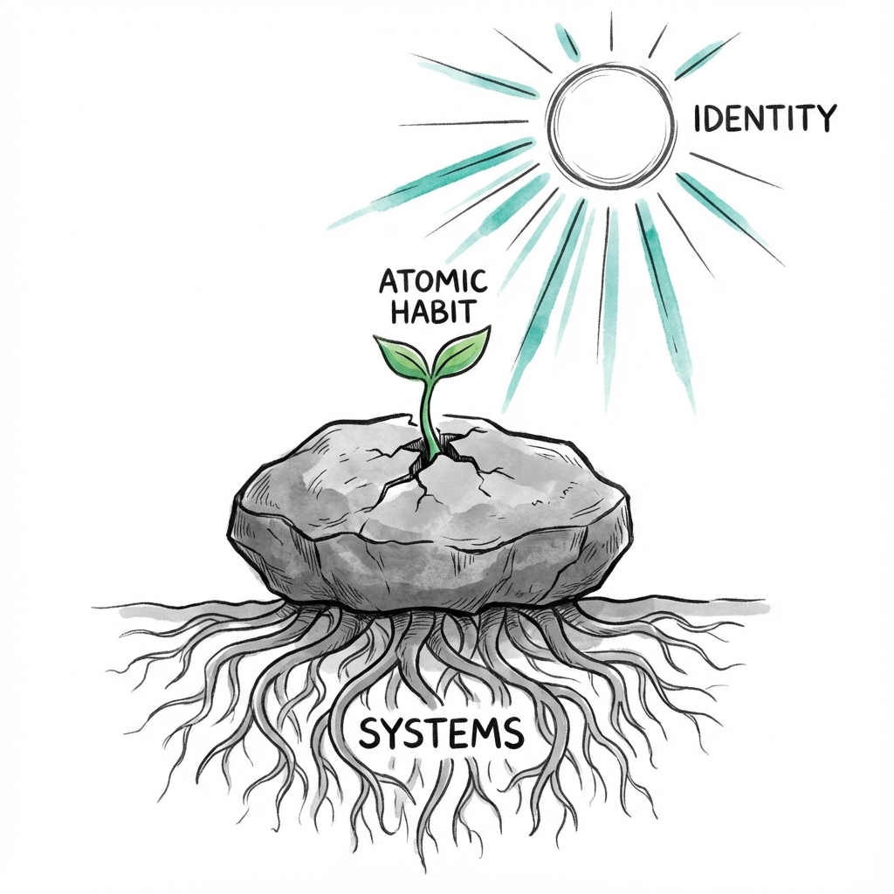
It is easy to underestimate the value of making small improvements.
- If you save a little money now, you're still not a millionaire.
- If you go to the gym three days in a row, you're still out of shape.
We make a few changes, but the results don't seem to come quickly, so we slide back into our previous routines.
But the math of small improvements is undeniable.
If you can get 1% better each day for one year, you'll end up thirty-seven times better by the time you're done.
1.01^{365} = 37.78
Conversely, if you get 1% worse each day, you decline nearly to zero.
0.99^{365} = 0.03
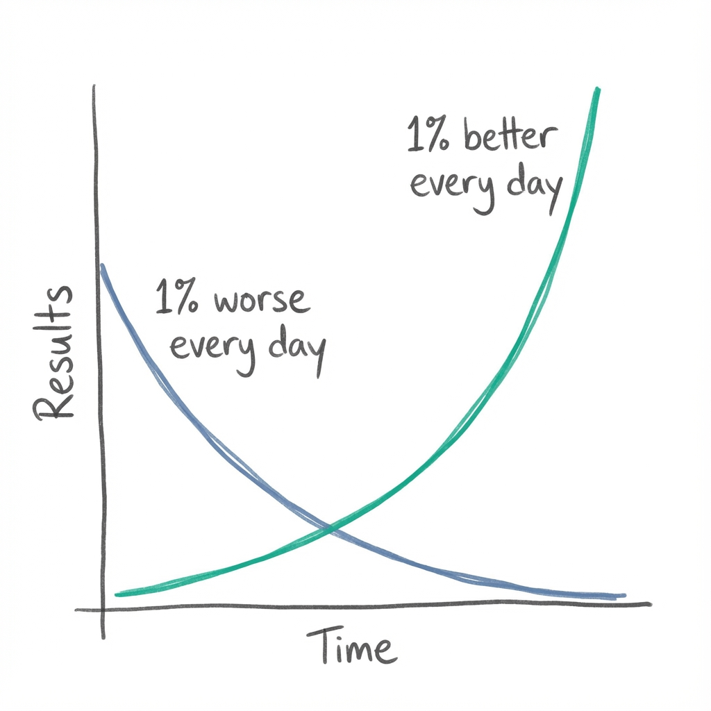
Habits are the compound interest of self-improvement.
The same way that money multiplies through interest, the effects of your habits multiply as you repeat them.
They seem to make little difference on any given day, yet the impact they deliver over the months and years can be enormous.
1. The Plateau of Latent Potential
Why is it so hard to stick with a habit long enough to see these results?
Because we expect progress to be linear.
We think if we put in double the effort, we should get double the results immediately.
In reality, the results of our efforts are often delayed. Clear calls this the Plateau of Latent Potential.
Think of it like an ice cube sitting on a table in a freezing room. The temperature is 25 degrees.
You slowly heat the room.
26 degrees. Nothing happens.
27 degrees. Nothing.
28, 29, 30, 31. Still nothing.
The ice cube looks exactly the same. Then, 32 degrees. The ice begins to melt.
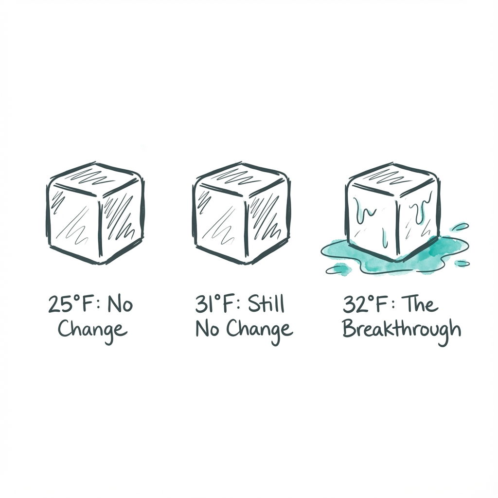
A one-degree shift, seemingly no different from the temperature increases before it, unlocked a huge change.
Your work was not wasted during those earlier degrees. It was being stored.
All the action happens at 32 degrees.
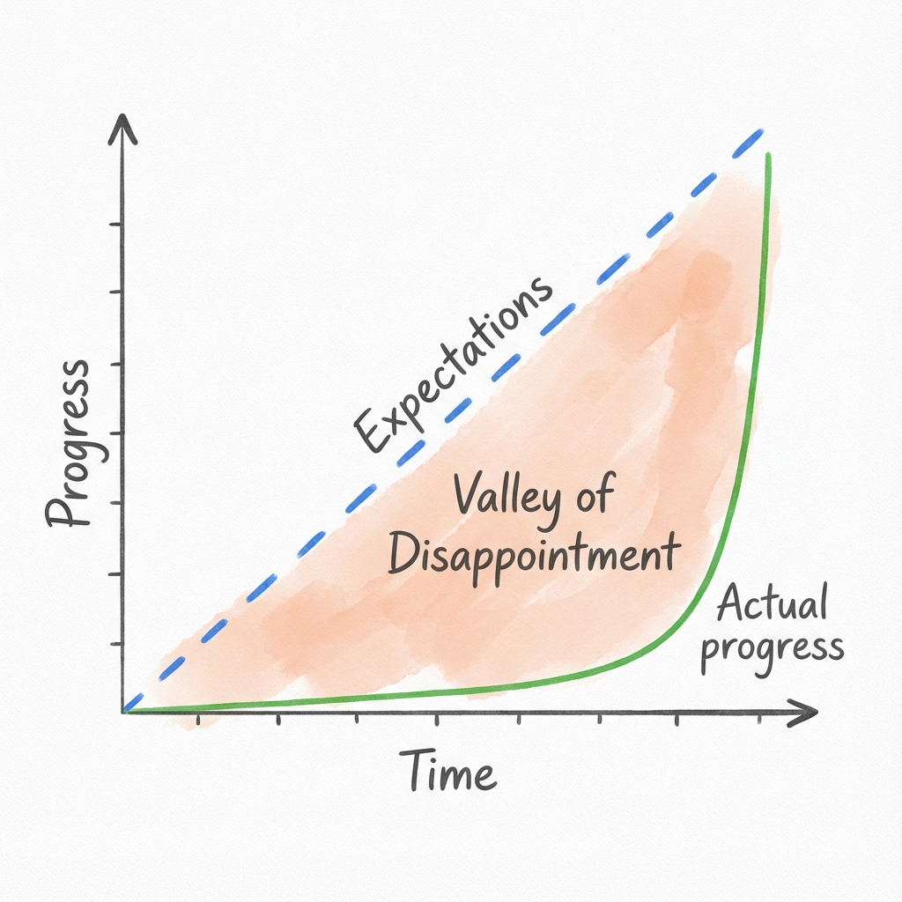
When you finally break through this plateau, people will call you an overnight success. They only see the melting. They don't see the heating.
To make a meaningful difference, habits need to persist long enough to break through this plateau.
2. Forget Goals, Focus on Systems
Prevailing wisdom says the best way to achieve what we want is to set specific, actionable goals.
But goals are fraught with problems.
- Winners and losers have the same goals. Every Olympian wants the gold medal. The goal cannot be what differentiates the winner from the loser.
- Achieving a goal is only a momentary change. If you clean your messy room, you have a clean room for now. But if you don't change the sloppy habits that led to the mess, you'll soon be looking at a new pile of clutter.
- Goals restrict your happiness. A goal-oriented mindset says that once I reach my goal, then I'll be happy.
The alternative is to focus on systems.
Goals are about the results you want to achieve. Systems are about the processes that lead to those results. The score takes care of itself.
3. Identity-Based Habits
There are three layers of behavior change, like the layers of an onion. 1. Outcomes: What you get (losing weight). 2. Process: What you do (going to the gym). 3. Identity: What you believe (I am an athlete).
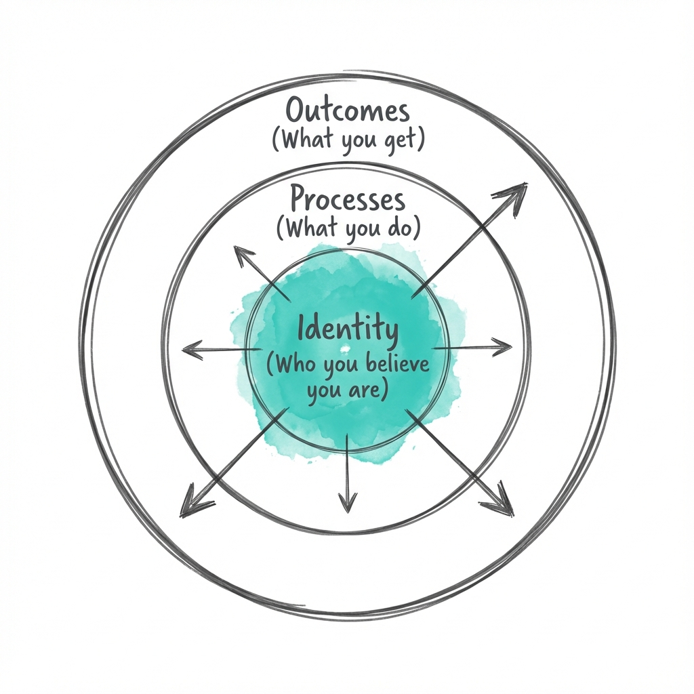
Most people try to change their habits by focusing on what they want to achieve (outcomes).
This leads to outcome-based habits.
The alternative is to build identity-based habits.
With this approach, you start by focusing on who you wish to become.
Imagine two people resisting a cigarette. When offered a smoke, the first person says, "No thanks. I'm trying to quit." It sounds reasonable, but this person still believes they are a smoker who is trying to be something else.
The second person says, "No thanks. I'm not a smoker."
It's a small difference, but this statement signals a shift in identity.
True behavior change is identity change.
You might start a habit because of motivation, but the only reason you'll stick with one is that it becomes part of your identity.
The goal is not to read a book. The goal is to become a reader.
Your habits are how you embody your identity.
Every time you write a page, you are casting a vote for the identity of a writer.
No single instance will transform your beliefs, but as the votes build up, so does the evidence of your new identity.
4. The Habit Loop
How does the brain build these habits?
It relies on a simple four-step feedback loop: 1. Cue: A bit of information that predicts a reward (e.g., your phone buzzes). 2. Craving: The motivational force. You don't crave the phone buzz. You crave the feeling of social connection or entertainment. 3. Response: The actual habit you perform (you pick up the phone). 4. Reward: The end goal. You see the message and feel satisfied.
This loop runs endlessly, scanning your environment, predicting what will happen next, and trying out different responses.
Over time, this loop becomes automatic.
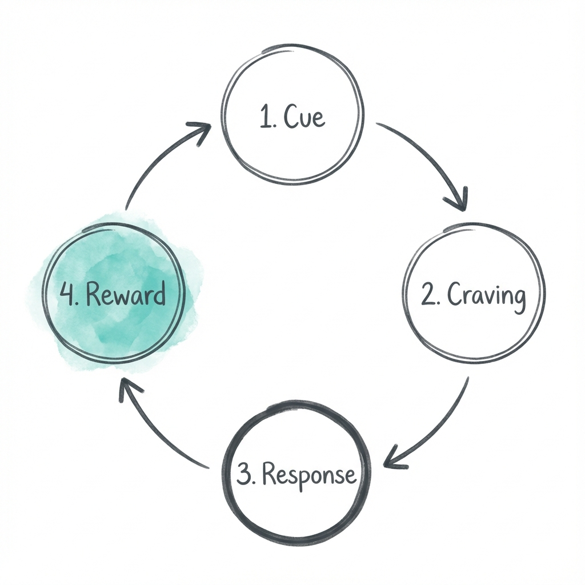
To engineer better habits, we simply need to ask four questions corresponding to these steps.
The Four Laws of Behavior Change: 1. Cue: How can I make it obvious? 2. Craving: How can I make it attractive? 3. Response: How can I make it easy? 4. Reward: How can I make it satisfying?
Module 2: The 1st Law: Make It Obvious
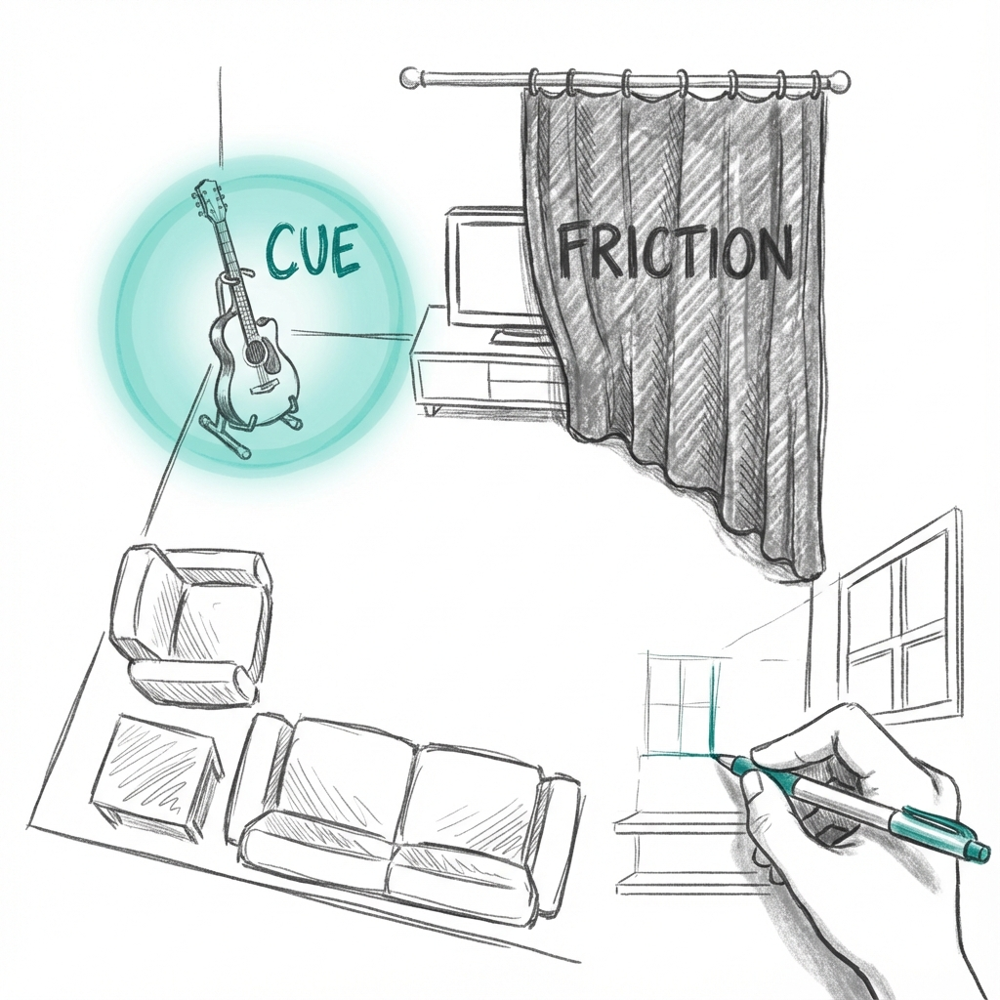
The Japanese railway system is legendary for its punctuality and safety. If you watch a train operator in Tokyo, you will notice a peculiar habit.
As the train approaches a signal, the operator points at it.
"Signal is green."
The train pulls into the station. He points at the speedometer.
"Forty-two kilometers per hour."
When it's time to leave, he points at the timetable.
"Departing on schedule."
This process is known as Pointing-and-Calling.
It seems silly to the outside observer, but it reduces errors by up to 85% and cuts accidents by 30%.
Why does it work? Because it raises awareness from a nonconscious habit to a conscious level.
Over time, our habits become invisible. We don't think about tying our shoes or unplugging the toaster. We just do it. This automaticity is useful, but it becomes dangerous when we want to change.
You cannot change a habit if you aren't aware of it.
Before we can build new habits, we must get a handle on our current ones.
1. The Habits Scorecard
To implement your own version of Pointing-and-Calling, create a Habits Scorecard.
Make a list of your daily habits. Everything from waking up to brushing your teeth to checking your phone.
Then, categorize them:
* + for a positive habit (helps you become who you want to be).
* - for a negative habit (casts a vote against your desired identity).
* = for a neutral habit.
Don't change anything yet. Just observe.
If you catch yourself checking Instagram when you should be working, say out loud: "I am about to check social media. I do not need to do this. It will distract me from my work."
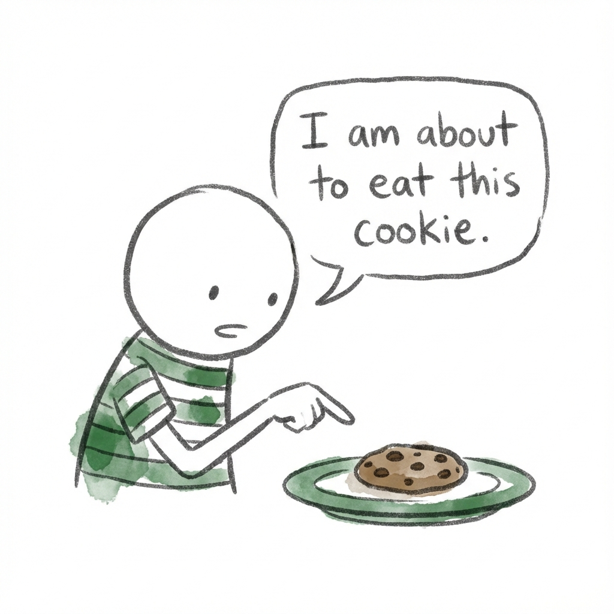
Hearing your bad habits spoken aloud makes the consequences seem more real.
2. The Implementation Intention
Once you are aware, you need clarity.
Many people think they lack motivation when they lack clarity.
They say, "I want to get in shape," but they never define exactly when and where the workout will happen.
The best way to start a new habit is to use an Implementation Intention.
This is a plan you make beforehand about when and where to act.
Hundreds of studies show that people who make a specific plan are far more likely to follow through.
The formula is simple:
I will [BEHAVIOR] at [TIME] in [LOCATION].
- Bad: I will read more.
- Good: I will read Spanish for 20 minutes at 6:00 p.m. in my bedroom.
Give your habits a time and a space to live in the world.
3. Habit Stacking
The French philosopher Denis Diderot once acquired a beautiful scarlet robe. It was so elegant that he immediately noticed how out of place it seemed among his other common possessions.
He soon felt the urge to upgrade everything else. New rugs, new sculptures, a new mirror to match the robe.
This tendency for one purchase to lead to another is called the Diderot Effect.
You can use this connectedness to your advantage through Habit Stacking. Instead of pairing your new habit with a time and location, you pair it with a current habit.
You already have patterns you repeat every day (showering, drinking coffee, making your bed). Use these strong neural pathways as anchors for new behaviors.
The formula is:
After [CURRENT HABIT], I will [NEW HABIT].
- After I pour my morning coffee, I will meditate for one minute.
- After I take off my work shoes, I will immediately change into my workout clothes.
- After I sit down to dinner, I will say one thing I'm grateful for.
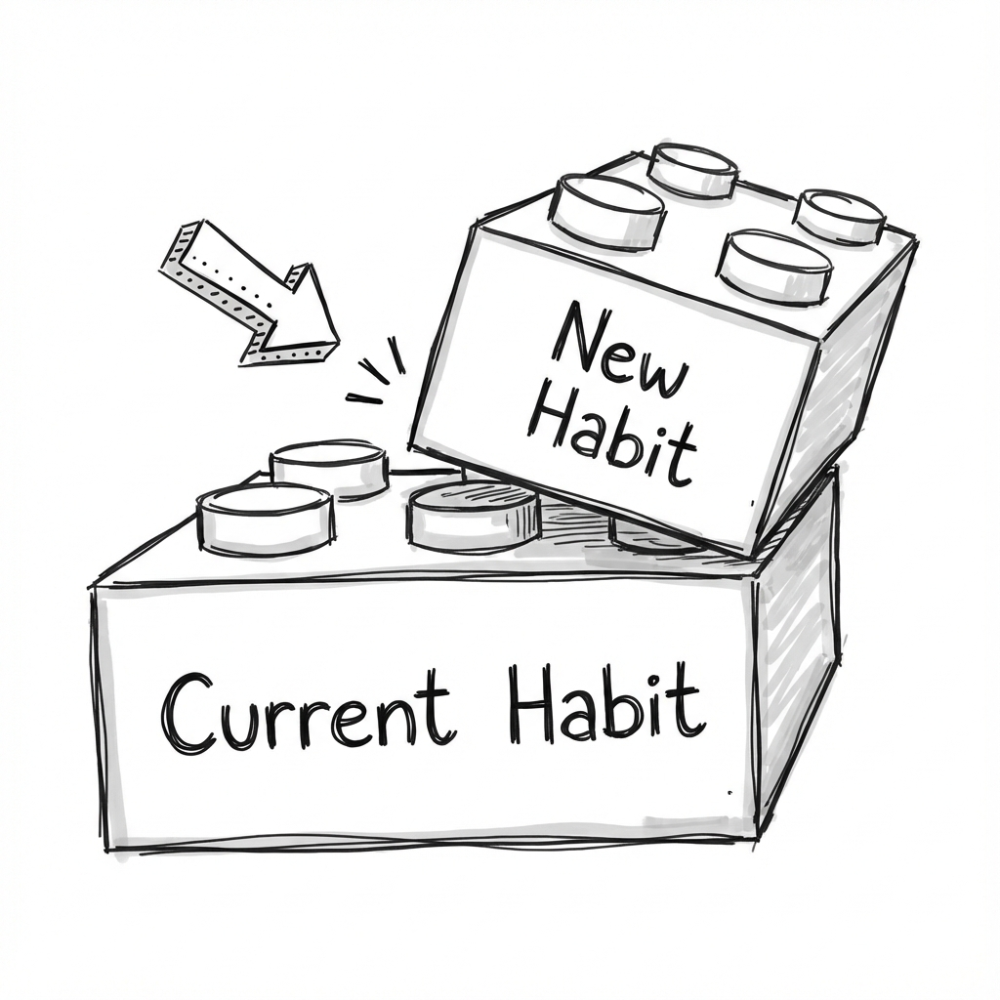
4. Motivation is Overrated, environment Matters More
In the hospital cafeteria at Massachusetts General Hospital, researchers ran an experiment. They didn't lecture anyone about healthy choices. They didn't post signs or hand out pamphlets. They simply added baskets of water bottles near the food stations and made water more visible in the fridges.
Soda sales dropped 11%. Water sales jumped 25%.
People chose water not because of willpower, but because it was the most obvious option.
We often assume that people with the best self-control are the ones with the most willpower. In reality, disciplined people are just better at structuring their lives so they don't need to use willpower.
They spend less time in tempting situations.
Environment is the invisible hand that shapes human behavior. — James Clear
- If you want to practice guitar, don't keep it in the closet. Put it on a stand in the middle of the living room.
- If you want to drink more water, fill bottles and place them around the house.
- If you want to break a bad habit, apply the inversion of the 1st Law. Make It Invisible.
- If you can't get work done, leave your phone in another room.
- If you waste money on electronics, unsubscribe from tech review emails.
You can break a habit, but you are unlikely to forget it.
Once the mental grooves are carved, the urge to act follows whenever the cue reappears.
It is easier to avoid temptation than to resist it.
Module 3: The 2nd Law: Make It Attractive
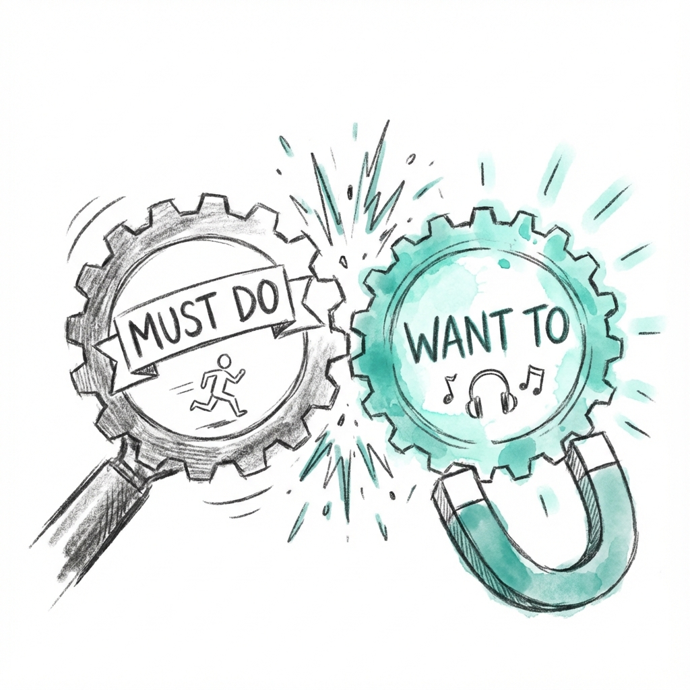
In the 1940s, a Dutch scientist named Nikolaas Tinbergen conducted a series of experiments with herring gull chicks.He discovered that a chick would peck at a tiny red spot on its mother's beak to get food.
But when Tinbergen presented the chicks with a stick that had three red stripes, they pecked at it even more enthusiastically.
The chicks preferred the exaggerated stimulus.
Just as a herring gull chick is drawn to a more prominent red spot, humans are drawn to highly attractive habits.
The more attractive an opportunity is, the more likely it is to become habit-forming.
This is why our phones constantly buzz with notifications, why food manufacturers design hyper-palatable snacks, and why social media apps are engineered to keep us scrolling.
1. Temptation Bundling
How do you make a habit attractive?
One powerful strategy is Temptation Bundling.
This involves pairing an action you want to do with an action you need to do.
Think of it like this: * Need to do: Exercise. * Want to do: Watch your favorite TV show.
You can temptation bundle by telling yourself: "I will only watch my favorite TV show while I am exercising on the stationary bike."
This strategy was successfully employed by Nilofer Merchant, who found a way to exercise consistently by only allowing herself to watch her favorite TV show when she was on the treadmill.
She bundled her craving for entertainment with her need for exercise.
The formula for Temptation Bundling is:
After [CURRENT HABIT], I will [HABIT I NEED].
After [HABIT I NEED], I will [HABIT I WANT].
For example: * After I get my coffee, I will plan my to-do list (need). * After I plan my to-do list, I will watch YouTube (want).
This makes the habit you need to do immediately precede the reward you want.
2. The Role of Dopamine
The reason temptation bundling works is rooted in the way our brains process rewards.
When we anticipate a reward, our brains release dopamine. This neurotransmitter is crucial for motivation and learning.
It's not the pleasure of having the reward that drives us, but the pleasure of anticipating it.
Our brains are constantly running a dopamine-seeking reward loop.
When you see a cookie, your brain doesn't just register the cookie. It anticipates the sugar rush.
This anticipation creates the craving.
If you can make the beginning of a hard habit associated with something you look forward to, your brain will start to release dopamine at the cue for the hard habit itself, making it more attractive.
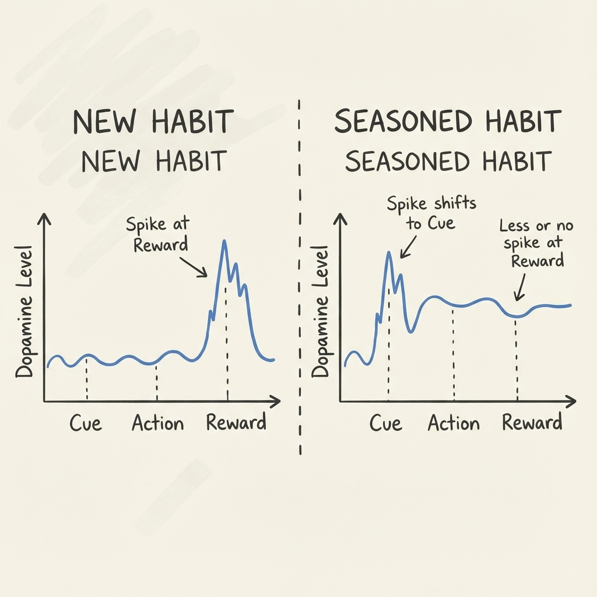
3. Social Norms: The Influence of the Tribe
Humans are herd animals.
We want to fit in, belong to the tribe, and earn the respect and approval of others.
This desire is a powerful driver of our habits. We tend to imitate the habits of three groups in particular:
- The Close: We imitate the habits of people near us (family and friends). If your friends are all eating healthy, you're more likely to eat healthy.
- The Many: We imitate the habits of the majority (the tribe). When in a new environment, we look to see what everyone else is doing.
- The Powerful: We imitate the habits of those we envy. This is why celebrity endorsements are so effective.
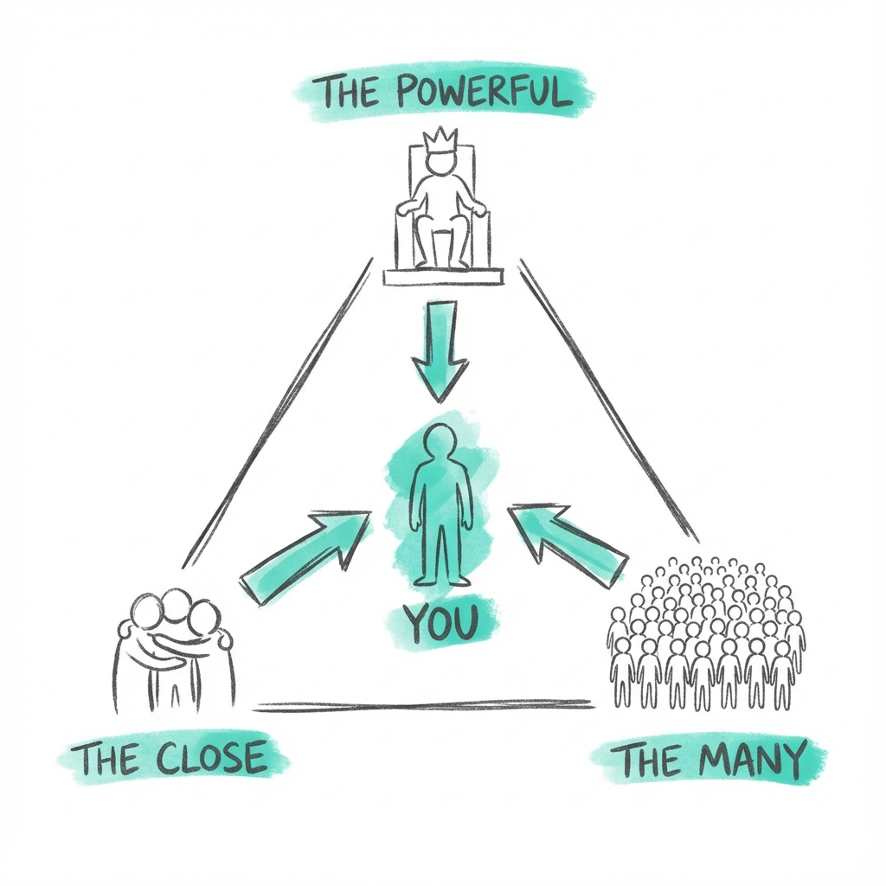
If you want to build a good habit, join a culture where your desired behavior is the normal behavior. If you want to read more, join a book club. If you want to get fit, join a fitness group where being healthy is the norm.
The shared identity and social approval make the habit significantly more attractive.
4. Reprogramming Your Brain to Enjoy Hard Habits
Many habits seem inherently unattractive, like exercise or waking up early.
But you can reframe these activities to make them more appealing.
Instead of saying, "I have to wake up early," try, "I get to wake up early and work on my goals."
This subtle shift in language changes your perception.
Another way to make hard habits attractive is to associate them with a positive experience.
For example, some people hate the idea of meditation because they associate it with being bored.
However, if you meditate in a beautiful, peaceful place, or combine it with calming music, you can start to associate meditation with positive feelings.
Ultimately, by understanding that our cravings are driven by the anticipation of reward, and by strategically designing our habits to be more attractive through methods like temptation bundling and leveraging social influences, we can dramatically increase our likelihood of sticking to them.
Module 4: The 3rd Law: Make It Easy
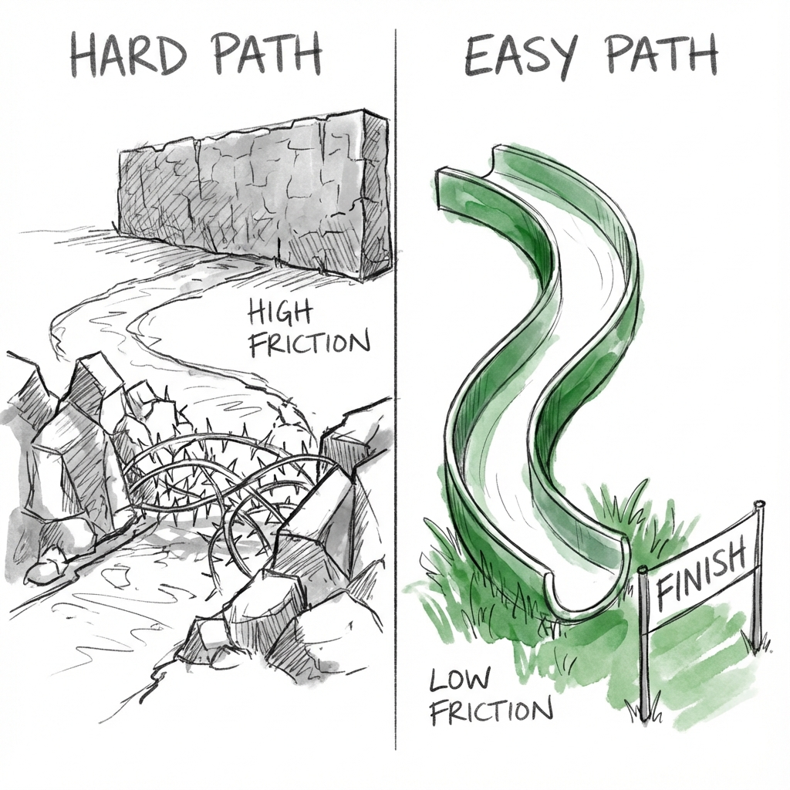
Imagine you want to start exercising every day.
If your gym is across town and requires a 30-minute commute, traffic, and packing a gym bag, the friction involved makes it difficult to be consistent.
What if your gym was in your basement, and all you had to do was walk downstairs?
Suddenly, the habit becomes significantly easier.
The 3rd Law of Behavior Change is to Make It Easy. The less friction associated with a habit, the more likely you are to do it.
1. Motion vs. Action
It's easy to get caught in a cycle of motion without taking action.
- Motion is planning, strategizing, and learning without actually doing the work.
- Action is the behavior that will produce a result.
For example, you could spend hours researching the best diet, creating meal plans, and buying cookbooks (motion). Or you could just cook a healthy meal (action).
Motion feels productive, but it doesn't deliver outcomes.
To build good habits, we need to shift from motion to action.
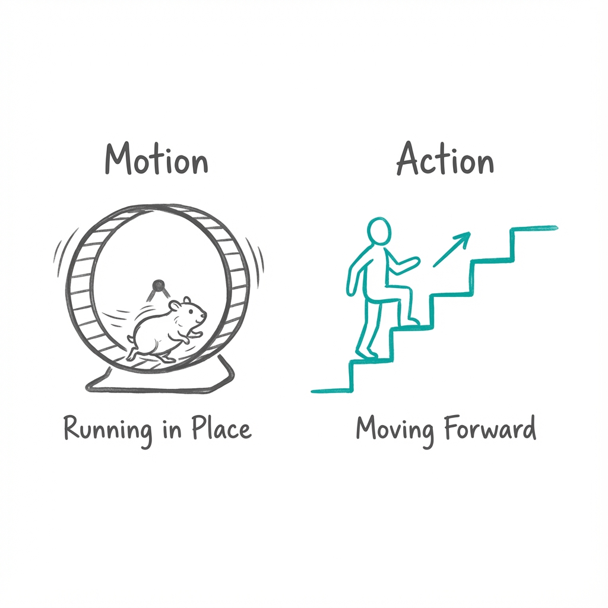
The best way to do this is to reduce the friction of getting started.
2. The Law of Least Effort
Energy is precious, and our brains are wired to conserve it.
When given a choice, we will naturally gravitate towards the option that requires the least amount of work.
This is the Law of Least Effort.
To apply this law, you need to deliberately design your environment to make good habits the path of least resistance.
-
Decrease the friction for good habits: If you want to practice guitar more, don't put it in a case in the closet. Leave it out on a stand in your living room, ready to be played.
-
Increase the friction for bad habits: If you watch too much TV, unplug it after each use and take out the batteries from the remote. That small barrier is often enough to break the spell.
A well-designed environment makes the behaviors that are good for you easier and the behaviors that are bad for you harder.
It's about priming the environment for future success.
3. The Two-Minute Rule
Many habits fail because we try to do too much too soon.
We try to read 30 books a year or run a marathon when we haven't even formed the habit of reading for 10 minutes a day or walking around the block.
The Two-Minute Rule states: When you start a new habit, it should take less than two minutes to do.
The goal is to master the art of showing up.
The actual activity might be more extensive, but the first two minutes should be effortless.
- Read before bed each night becomes Read one page.
- Do yoga for 30 minutes becomes Take out my yoga mat.
- Study for class becomes Open my notes.
- Run three miles becomes Put on my running shoes.
The idea is to standardize the beginning of the habit.
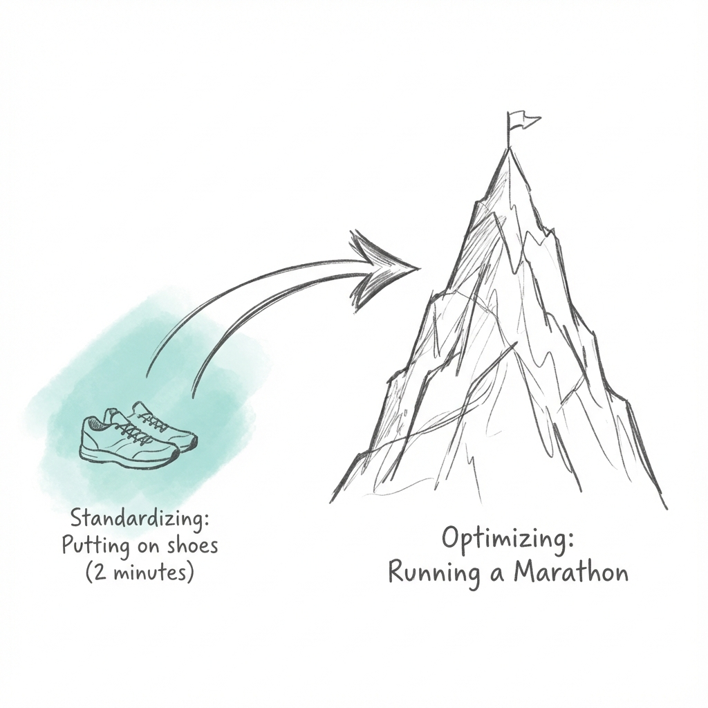
Once you've started, it's often easier to continue.
Taking out your yoga mat might lead to a full session, but even if it doesn't, you've reinforced the identity of someone who does yoga. It's a gateway habit.
4. Automating Good Decisions
The most effective way to lock in good habits is to automate them.
When a decision is automated, you eliminate the need for willpower in the moment.
-
One-time decisions: These are actions you take once that automatically ensure a good habit in the future.
- Signing up for automatic savings transfers from your checking to your savings account.
- Buying high-quality blackout curtains to improve sleep.
- Deactivating social media notifications on your phone.
- Setting up an automatic bill payment for your gym membership.
-
Commitment Devices: These are choices you make in the present that control your actions in the future.
- Using an app that blocks distracting websites for a set period.
- Asking a friend to hold you accountable for a goal, with a penalty if you fail.
- Pre-paying for personal training sessions, making it harder to skip.
These strategies shift your habits from conscious, effortful choices to automatic, effortless actions. The path of least resistance becomes the path of good habits.
Module 5: The 4th Law: Make It Satisfying
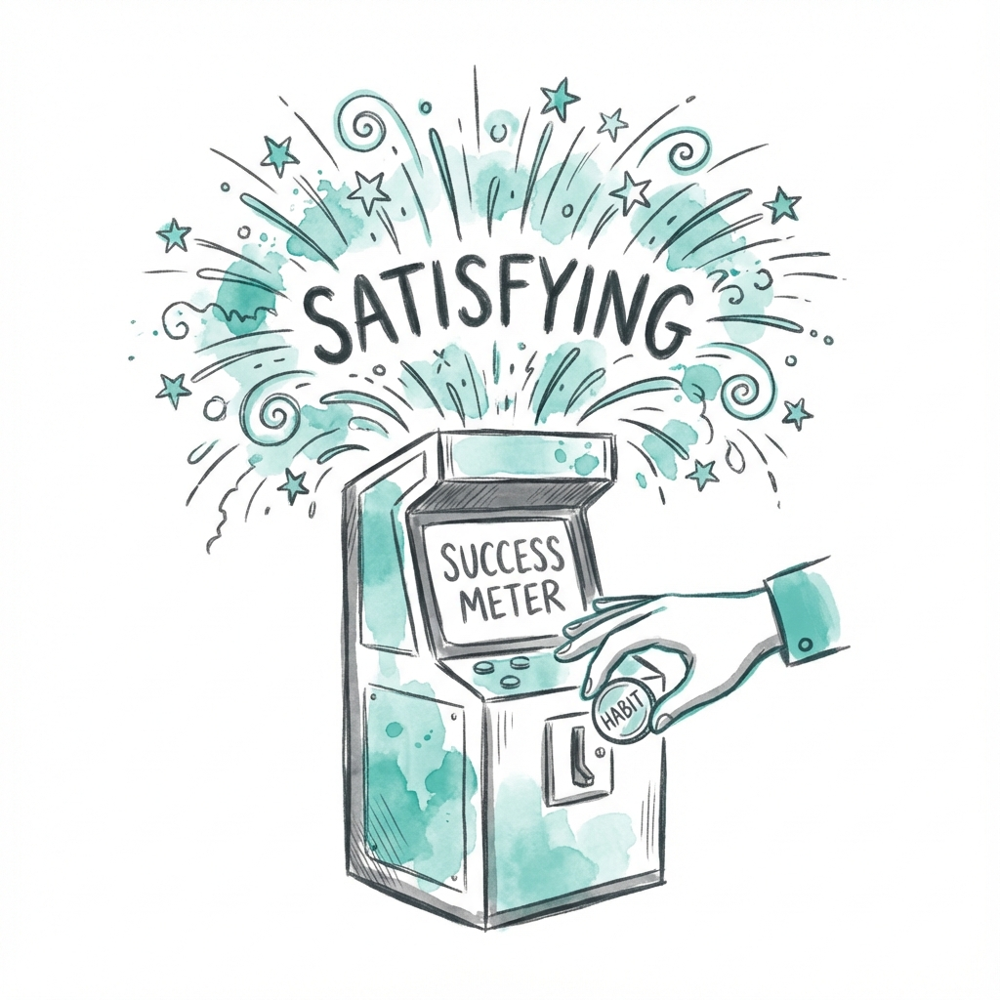
In 1898, Edward Thorndike's experiments with cats in puzzle boxes revealed a fundamental principle of behavior.
Behaviors followed by satisfying consequences tend to be repeated, and those that produce unpleasant consequences are less likely to be repeated. — Edward Thorndike
This is the Cardinal Rule of Behavior Change.
We are more likely to repeat a behavior when the experience is satisfying.
This is because satisfied feelings signal to the brain that the action is worth remembering and repeating in the future.
The 4th Law of Behavior Change is to Make It Satisfying.
1. Immediate vs. Delayed Return Environments
Our ancestors lived in what Clear calls an immediate-return environment.
The consequences of their actions were instant. Hunt food, eat food. Encounter predator, run or fight.
There was little delay between action and reward.
Modern society, however, often operates as a delayed-return environment.
- We work for years to get a promotion.
- We save money for retirement decades in the future.
- We eat healthy today for long-term health benefits.
The rewards are significant but not immediate.
This mismatch between our ancient brains and our modern environment is a primary reason good habits are hard to maintain and bad habits are hard to break.
Bad habits often provide immediate gratification (e.g., eating junk food, checking social media), even if the long-term consequences are negative.
Good habits, conversely, often require effort now for a reward later.
To bridge this gap, we need to add immediate gratification to good habits and immediate pain to bad ones.
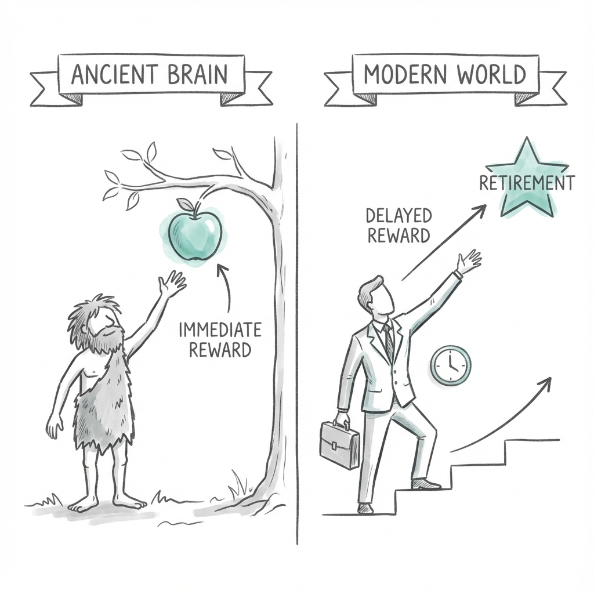
2. Habit Tracking: Don't Break the Chain
One of the most effective ways to make a habit satisfying is through Habit Tracking.
This involves marking down each time you successfully perform a habit.
The simple act of tracking your progress can be incredibly motivating.
Think of it like Jerry Seinfeld's advice to a young comedian: write jokes every day and put a big red X on a calendar for each day you do.
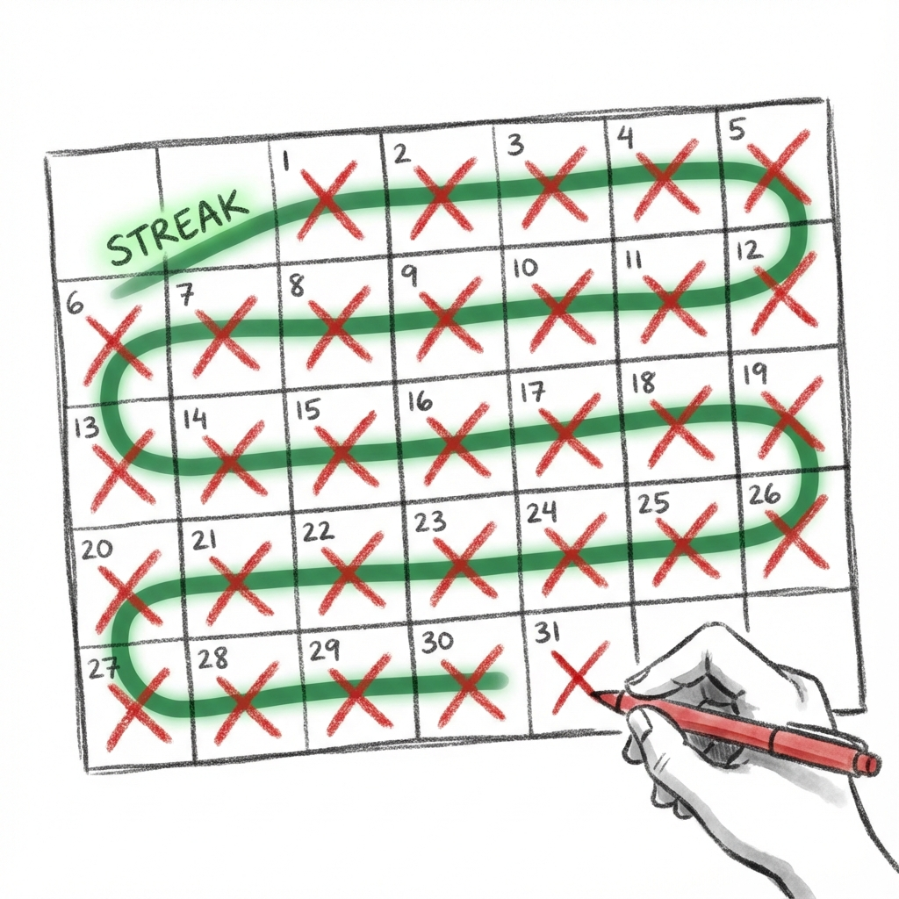
Soon, you'll have a chain of X's. The goal then becomes not to break the chain.
Habit tracking provides several benefits: 1. It's Obvious: It creates a visual cue, reminding you to act. 2. It's Attractive: The desire to keep the chain going becomes a motivating factor. 3. It's Easy: The act of marking it down takes seconds. 4. It's Satisfying: Each mark is a small, immediate reward, a "vote" for your desired identity.
Never miss twice.
If you miss a day, get back on track immediately.
One slip-up is an accident. Two is the start of a new habit.
3. Accountability Partners and Habit Contracts
While habit tracking provides internal satisfaction, external forces can also make habits more satisfying (or unsatisfying).
This is where Accountability Partners and Habit Contracts come in.
- Accountability Partner: Simply telling someone your goals significantly increases your commitment.
Knowing that someone is watching, even passively, can provide a powerful incentive. If you share your progress with a friend, coach, or group, the social pressure to perform can be a strong motivator.
No one wants to look bad in front of someone they respect.
- Habit Contract: This is a formal agreement where you state your commitment to a habit and the consequences if you fail to perform it. You sign it, and ideally, an accountability partner signs it too.
The consequences for failing should be meaningful enough to create immediate pain for a missed action. For example, a writer might agree to pay \$100 to a cause they dislike every time they miss a writing session.
The point of these strategies is to make the consequences of inaction immediate.
In our delayed-return world, we need to artificially introduce immediate satisfaction to good habits and immediate pain to bad ones.
By making habits satisfying, we tap into our brain's natural reward mechanisms, ensuring that the behaviors we want to cultivate are reinforced and repeated.
Module 6: Advanced Tactics and Mastery
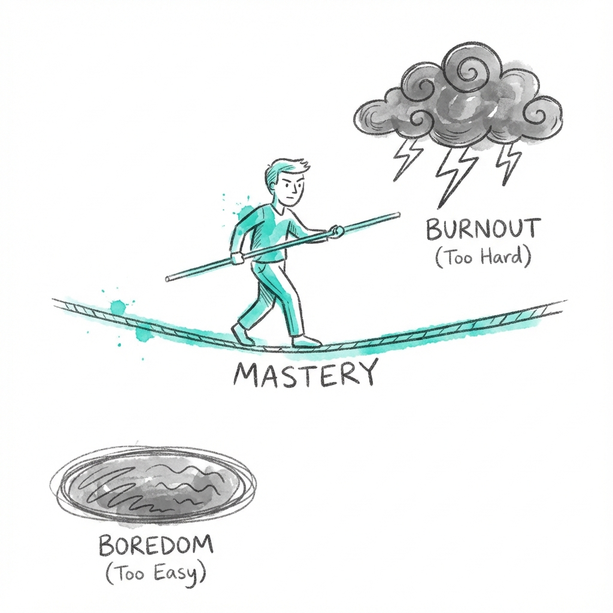
By now, you understand the foundational principles of building atomic habits: make them obvious, attractive, easy, and satisfying.
But mastering these principles isn't a one-time event. It is a continuous process of refinement.
This final module delves into advanced tactics for sustaining progress and achieving mastery.
1. The Goldilocks Rule
Maintaining motivation and achieving peak performance often comes down to finding the sweet spot between challenge and success.
This is known as The Goldilocks Rule.
Humans experience peak motivation when working on tasks that are right on the edge of their current abilities. Not too hard, not too easy, but just right.
Think of a game that's too easy. You quickly get bored. A game that's too hard? You give up in frustration. But a game that presents a manageable challenge, where you can see progress and feel competent, keeps you engaged.
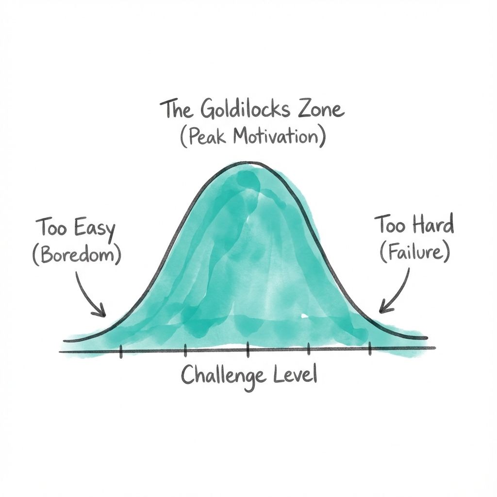
Applying the Goldilocks Rule means:
- Gradually increasing difficulty. Once a habit becomes easy, introduce a slight challenge to keep yourself engaged. For example, if you can easily meditate for 10 minutes, try 11 or 12.
- Avoiding plateaus. When you feel a habit becoming monotonous, look for ways to subtly change it, adding variety without sacrificing consistency. This could be a new routine, a different location, or a new tool.
The greatest threat to success is not failure, but boredom.
When habits become routine, they lose their excitement.
To stay on track, you must find ways to make the process interesting enough to stick with.
2. The Downside of Creating Good Habits
A golfer might hit thousands of balls in practice, reinforcing their swing. But if they're not constantly seeking feedback and adjusting, they might just be reinforcing a mediocre swing.
This is the hidden danger of good habits: mindlessness.
Once a habit becomes automatic, we stop paying attention. We fall into a rut, performing actions without critical reflection or seeking improvement.
The automaticity that makes habits efficient can also prevent us from noticing small errors.
This is why, even with robust systems, regular self-awareness and feedback are crucial.
3. Reflection and Review: Sustaining Mastery
To counteract the downside of good habits and ensure continuous improvement, you need a system for Reflection and Review.
Mastery is not a destination but a process.
Clear suggests two primary modes of reflection:
- Annual Review: Once a year, take time to evaluate your progress. Ask yourself:
- What went well this year? What didn't?
- What did I learn?
- What habits am I satisfied with? What habits do I need to improve or eliminate?
- Am I still becoming the type of person I want to be?
- Quarterly Review: Every few months, conduct a smaller review. This is a chance to examine your habits in detail and see if they are still serving your desired identity.
These reviews are opportunities to recalibrate your systems, adjust your strategies, and ensure your habits are aligned with your evolving goals and identity.
Conclusion
Remember James Clear, the sophomore whose skull was fractured by a flying baseball bat?
He didn't recover through a single moment of inspiration.
He didn't discover a secret shortcut.
He showed up to the weight room when he could barely see straight. He stacked one small habit on top of another. He got 1% better, day after day, for years.
Six years later, he was the top male athlete at his university.
That's the central truth of this longform:
You do not rise to the level of your goals. You fall to the level of your systems. — James Clear
Build the right system, and the results take care of themselves. Every small choice is a vote for the person you want to become.
You are not your habits yet. But you are becoming them, one repetition at a time.
Every week, one book gets this treatment — fully structured, nothing skipped. Find them all at longform.online